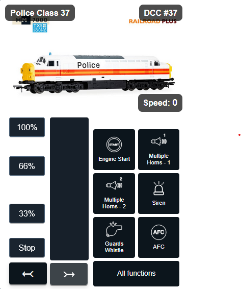
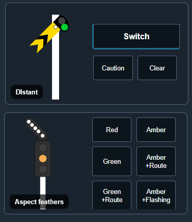
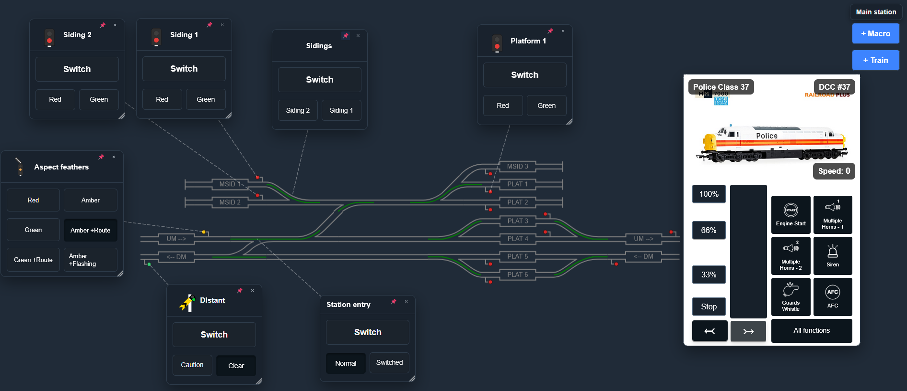
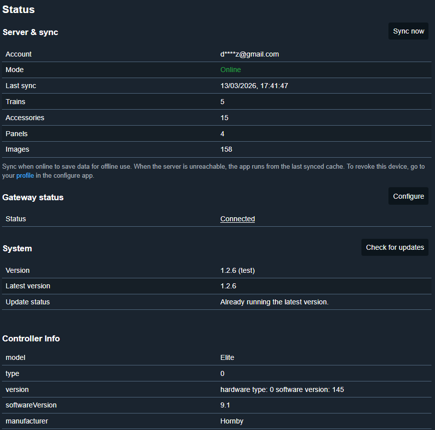

Introducing Panels DCC
Panels DCC is a flexible control system for Digital Command Control layouts, designed to bring together train driving, accessory operation, and route-based panel control into a single, coherent experience.
Whether you want hands-on driving, realistic signal-box style operation, or a hybrid of both, Panels DCC adapts to how you want to run your railway.
Panels DCC adapts seamlessly across mobile phones, tablets, and desktops. Multiple clients can run simultaneously with live state synchronization — changes on one device appear instantly on all others.
Train Operation
Drive trains, not menus
Panels DCC provides intuitive control of locomotives with clear visibility of speed, direction, and functions. Decoder functions such as lights and sound are shown as icons, so you can operate at a glance. State is synchronised across multiple devices, so you can switch between tablets, phones, or desktops and keep flexible control without losing context.
Key capabilities include:
- Independent control of multiple locomotives
- Smooth speed and direction control
- Function icons for lights, sound, and auxiliary features
- Clear feedback on train state, even when operating several trains at once
- Sync across devices for flexible operation from anywhere on the layout

Accessory Operation
Points, signals, and layout features — all in one place
Beyond train control, Panels DCC gives you centralised control of layout accessories.
Turnouts, signals, lighting, and other accessories are presented as first-class elements of the system, not afterthoughts. Each accessory can be controlled directly or grouped logically to create routes.
This allows you to:
- Throw points and set signals with confidence
- See the current state of accessories at a glance
- Reduce operational errors during busy running sessions
- Build layouts that behave consistently and predictably
Accessory control is designed to scale — from a small shunting plank to a complex multi-station layout.

Panel-Based Control
Operate your layout like a real signal box
One of the defining features of Panels DCC is its support for graphical control panels inspired by real railway signalling diagrams.
Instead of thinking in terms of addresses and commands, you operate the railway visually:
- Tracks are shown as lines
- Points and signals appear where they exist on the layout
- Routes are set by interacting with the panel, not by operating each component individually
This approach makes operation more realistic, more intuitive, and far more engaging — especially when running complex movements or timetabled sessions.
Panel-based control also supports:
- Route setting via accessory combinations (macros)
- Clear indication of route status
- A shared visual reference for multiple operators
- Train operation overlays for driving trains without changing screen

Cloud Configuration, Flexible Operation
Panels DCC is configured in the cloud. That gives you a single, resilient place to edit and view your layout, set up panels, and configure trains — from anywhere, with no need to be at the layout. When you are ready to operate, your configuration is synced to your local control application.
From there, you can operate your layout online or offline. So you design and prepare in the cloud, then run the railway however your venue and connectivity allow — same interface, same behaviour.
Read more about the architecture and how to get started here.
